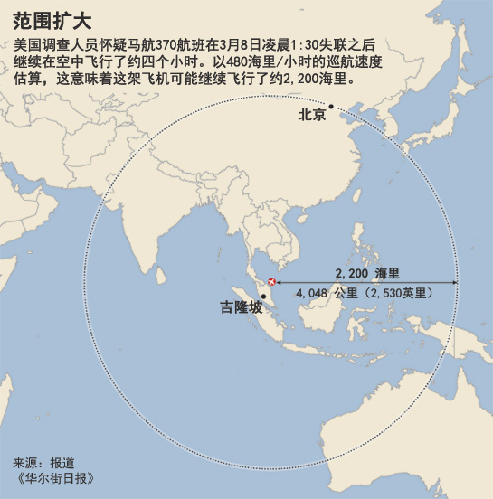
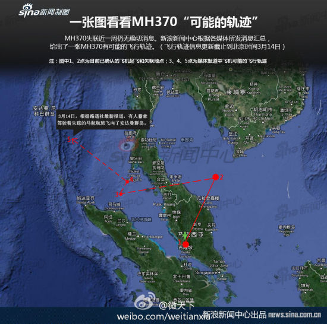
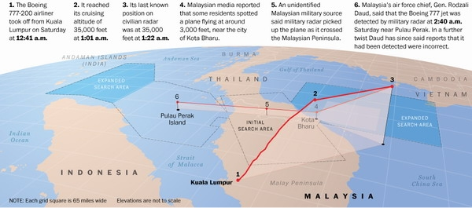

最近三天，由于美国方面的爆料，马来西亚官方终于被迫承认了很多事情。由此可见，马航和马军方之前刻意隐瞒了很多内幕，而且刻意发布了很多误导性的信息——既误导了多国的搜救工作，也误导了全球关注此事的网民（包括俺）。
俺在3月11日（周二）发布了一篇博文，分析了航班很可能是“空中解体”。如今看来，这篇分析已经没有意义了——因为这篇分析是基于错误的信息，从而得出错误的结论。
由于最近3天又爆了佷多料，俺重新汇总一下各方的报道。
在今天（15日）的的新闻发布会上，马来西亚总理已经承认，航班上的应答机被【人为】关闭。一旦关闭应答机，地面的二次雷达无法监控飞机的飞行线路（关于“一次雷达”和“二次雷达”的差异，俺在前一篇博文有介绍）。
应答机被关闭的时间点很有讲究——正好处于马来西亚和越南的管制区交接处。如果是在马来西亚管制区之内关闭应答机，会引起马来西亚空管的警觉；同样的，如果在越南管制区之内关闭应答机也会引起越南空管的警觉。而如果在交接处关闭应答机，就可以误导两国的空管——让两边的空管都以为飞机还在对方的管制区。这样就可以为飞机隐藏踪迹争取到足够多的时间。
显然，具有这种经验的人肯定是老手。而这架飞机的机长恰恰是“18365小时飞行经验”的老手。
美国方面介入调查之后，《华尔街日报》的记者发了一篇爆料《美调查人员怀疑失联航班实际飞了五小时 @ 华尔街日报》。从标题可以看出：飞机失踪之后又飞行了4小时。以下摘自该报道：
另外还可以参考如下这篇报道：《失联客机留下数据踪迹 @ 华尔街日报》
如果美方的分析成立，那么失踪后的4小时足以让波音777飞到很远的地方。如下地图是该飞机可能达到的范围。

根据《马来西亚军方雷达显示客机失联后多次转向 @ 纽约时报》的报道，飞机失联之后曾经多次转向。以下是报道的摘录：

根据马来西亚军方最近几天披露的雷达数据，370航班调整航向之后，有一个时间段采用 29500 英尺的高度向东飞行。这个高度是精心选择的。按照国际民航的规范：向东的航班会采用 29000 英尺的高度，向西飞行的航班会采用 30000 英尺高度。这样可以避免飞机相撞。
MH370 航班采用 29500 英尺的高度，正好是这两个高度的中间值。因为当时 MH370 上的各种通讯设备（比如应答机）已经处于切断状态，所以其它航班是看不到 MH370 的。这就会有相撞的危险。所以，选择 29500 英尺这个高度，是为了尽量避免跟该航线上的其它航班相撞。（更多介绍参见《29500英尺特殊高度的秘密 @ 21世纪经济报道》）
从这里可以看出，飞机失联之后，必定是由经验丰富的人在驾驶，此人非常熟悉民航飞行。
在《马来西亚军方雷达显示客机失联后多次转向 @ 纽约时报》中提到如下：
可能性之一：
马军方的雷达数据有误——飞机实际上没有达到这个高度。
可能性之二：
飞行员故意把飞行高度调得这么搞——故意让乘客和其他机组成员（因为失压）而昏迷。而且飞行员自己肯定准备好了应付“失压”的装备，所以不受影响。
可能性之三：
刚才看到某读者留言：如果要制造失压，无需飞到这么高，只需关闭客仓的“增压”开关既可。所以，还可能是其它未知的企图。
在马军方的雷达最后捕捉到该航班的时间点是 2:40——在这之后，飞机就从雷达上消失了。当时的飞行高度只有不到 3000英尺。也就是说，航班在低空飞行。根据外媒的分析，这么做很可能是为了规避马来西亚军方的雷达。
下面这张是三维立体图（来自《华盛顿邮报》）。从图中可以明显看出飞行高度的变化。在飞机进入马六甲海峡之后，飞行高度已经很低了。

大伙儿都知道，这次事件的蹊跷之一就是飞行员没有发出任何求救信号，飞机就失去联系了。单凭这点就可以排除“其他人胁迫飞行员并劫持飞机”的可能性。因为 9.11 之后，飞机驾驶仓的门都经过特殊加固，即使用手枪也难以打开。如果是其他人劫机，飞行员只需要通过应答机发出7500代码（表示劫机），那么地面的空管就明白了。
有一个很耐人寻味的新闻。据说这个53岁的机长在家中搭建了一个飞行模拟系统（照片如下）。结合前面提到的，飞机在后期采用低空飞行。有人怀疑该机长是在自己家中用这套模拟系统练习低空飞行。
具体请看《马航客机失踪前一天机长妻儿搬离住所 @ 网易》。其中提到：
马来西亚总理在15日的发布会结束之后，马来警方立即对机长家进行搜查。具体报道请看《马来警方搜查马航失联客机机长住宅 @ 腾讯新闻》。
综合上面的种种迹象，基本上可以断定是飞行员监守自盗。此飞机上有正副两个驾驶。到底是其中一人所为还是两人一起合谋，这就不好说了（但正驾驶的嫌疑更大）。另外，乘客或机组成员中是否有同谋，暂时也无法下结论。
在前一篇博文中，俺提到了事发之前一周，有人大量卖空马航的股票。再加上事发之后，马来西亚官方始终遮遮掩掩，该说的不说，不该说的却拼命误导。害得多国救援人员白白在越南海域浪费时间。俺不得不怀疑此事背后还有更多的隐情。也就是说，这事儿【不是】飞行员的【个人行为】，而是有组织有策划的劫机事件。
俺在3月11日（周二）发布了一篇博文，分析了航班很可能是“空中解体”。如今看来，这篇分析已经没有意义了——因为这篇分析是基于错误的信息，从而得出错误的结论。
由于最近3天又爆了佷多料，俺重新汇总一下各方的报道。
★航班失联的时间点——正好处于两国航管的边界
在今天（15日）的的新闻发布会上，马来西亚总理已经承认，航班上的应答机被【人为】关闭。一旦关闭应答机，地面的二次雷达无法监控飞机的飞行线路（关于“一次雷达”和“二次雷达”的差异，俺在前一篇博文有介绍）。
应答机被关闭的时间点很有讲究——正好处于马来西亚和越南的管制区交接处。如果是在马来西亚管制区之内关闭应答机，会引起马来西亚空管的警觉；同样的，如果在越南管制区之内关闭应答机也会引起越南空管的警觉。而如果在交接处关闭应答机，就可以误导两国的空管——让两边的空管都以为飞机还在对方的管制区。这样就可以为飞机隐藏踪迹争取到足够多的时间。
显然，具有这种经验的人肯定是老手。而这架飞机的机长恰恰是“18365小时飞行经验”的老手。
★航班失联之后的飞行时间——4小时
美国方面介入调查之后，《华尔街日报》的记者发了一篇爆料《美调查人员怀疑失联航班实际飞了五小时 @ 华尔街日报》。从标题可以看出：飞机失踪之后又飞行了4小时。以下摘自该报道：
失联客机从民用雷达屏幕上消失后，通讯卫星在至少五个小时的时间内收到了该客机上发来的断断续续的“数据连接请求”(data ping)。这些信号透露了飞机的方位、速度和海拔情况。
另外还可以参考如下这篇报道：《失联客机留下数据踪迹 @ 华尔街日报》
如果美方的分析成立，那么失踪后的4小时足以让波音777飞到很远的地方。如下地图是该飞机可能达到的范围。
★航班失联之后的航向——多次转向
根据《马来西亚军方雷达显示客机失联后多次转向 @ 纽约时报》的报道，飞机失联之后曾经多次转向。以下是报道的摘录：
据核查过数据的人士称，几乎可以肯定的是，失联客机曾飞临或飞经泰国南端，然后折返穿过马来半岛，接近槟城，而后再次飞到海上。部分是由于前述数据是基于两座雷达站记录的信号，其中一座雷达站位于马来西亚皇家空军(Royal Malaysian Air Force)在马来半岛西岸设立的巴特沃思基地，该基地位于槟城附近，另一座雷达站位于半岛东北岸的哥打巴鲁。两座雷达站侦测到的联络信号能大大提高数据的可靠性。下面这张是飞机多次转向的大致示意图（摘自新浪网）。
★航班失联之后的飞行高度——精心选择的高度
◇29500英尺——规避撞机
根据马来西亚军方最近几天披露的雷达数据，370航班调整航向之后，有一个时间段采用 29500 英尺的高度向东飞行。这个高度是精心选择的。按照国际民航的规范：向东的航班会采用 29000 英尺的高度，向西飞行的航班会采用 30000 英尺高度。这样可以避免飞机相撞。
MH370 航班采用 29500 英尺的高度，正好是这两个高度的中间值。因为当时 MH370 上的各种通讯设备（比如应答机）已经处于切断状态，所以其它航班是看不到 MH370 的。这就会有相撞的危险。所以，选择 29500 英尺这个高度，是为了尽量避免跟该航线上的其它航班相撞。（更多介绍参见《29500英尺特殊高度的秘密 @ 21世纪经济报道》）
从这里可以看出，飞机失联之后，必定是由经验丰富的人在驾驶，此人非常熟悉民航飞行。
◇45000英尺——制造失压或其它企图
在《马来西亚军方雷达显示客机失联后多次转向 @ 纽约时报》中提到如下：
马来西亚军方记录的雷达信号似乎显示，在从民用雷达上消失并向西急转之前，失联航班曾攀升到4.5万英尺（约合1.37万米）的高度，超出了波音777-200客机的飞行限高。这款波音机型的飞行限高是 43100 英尺。当客机飞到 45000 英尺，客舱内部会因为低压而导致乘客昏迷甚至死亡。但是之后的飞行过程，飞机的高度有升有降有转弯——这说明飞行员依然清醒。这就有几种可能：
可能性之一：
马军方的雷达数据有误——飞机实际上没有达到这个高度。
可能性之二：
飞行员故意把飞行高度调得这么搞——故意让乘客和其他机组成员（因为失压）而昏迷。而且飞行员自己肯定准备好了应付“失压”的装备，所以不受影响。
可能性之三：
刚才看到某读者留言：如果要制造失压，无需飞到这么高，只需关闭客仓的“增压”开关既可。所以，还可能是其它未知的企图。
◇3000英尺——规避雷达
在马军方的雷达最后捕捉到该航班的时间点是 2:40——在这之后，飞机就从雷达上消失了。当时的飞行高度只有不到 3000英尺。也就是说，航班在低空飞行。根据外媒的分析，这么做很可能是为了规避马来西亚军方的雷达。
下面这张是三维立体图（来自《华盛顿邮报》）。从图中可以明显看出飞行高度的变化。在飞机进入马六甲海峡之后，飞行高度已经很低了。
★飞机没有发出求救信号——排除了飞行员被胁迫
大伙儿都知道，这次事件的蹊跷之一就是飞行员没有发出任何求救信号，飞机就失去联系了。单凭这点就可以排除“其他人胁迫飞行员并劫持飞机”的可能性。因为 9.11 之后，飞机驾驶仓的门都经过特殊加固，即使用手枪也难以打开。如果是其他人劫机，飞行员只需要通过应答机发出7500代码（表示劫机），那么地面的空管就明白了。
★关于机长的其它嫌疑
◇机长家中的飞行模拟系统
有一个很耐人寻味的新闻。据说这个53岁的机长在家中搭建了一个飞行模拟系统（照片如下）。结合前面提到的，飞机在后期采用低空飞行。有人怀疑该机长是在自己家中用这套模拟系统练习低空飞行。
◇失踪前一天，机长的妻儿搬家
具体请看《马航客机失踪前一天机长妻儿搬离住所 @ 网易》。其中提到：
《马来邮报》前往机长的家庭住所，发现只有38岁的女佣在家。这位女佣说：“机长Zaharie的妻子和三个孩子，在航班失联前一天住到了他们第二个住所中。”
◇马来西亚警方对机长家进行搜查
马来西亚总理在15日的发布会结束之后，马来警方立即对机长家进行搜查。具体报道请看《马来警方搜查马航失联客机机长住宅 @ 腾讯新闻》。
★结论：飞行员劫持了飞机
综合上面的种种迹象，基本上可以断定是飞行员监守自盗。此飞机上有正副两个驾驶。到底是其中一人所为还是两人一起合谋，这就不好说了（但正驾驶的嫌疑更大）。另外，乘客或机组成员中是否有同谋，暂时也无法下结论。
★其它猜测
在前一篇博文中，俺提到了事发之前一周，有人大量卖空马航的股票。再加上事发之后，马来西亚官方始终遮遮掩掩，该说的不说，不该说的却拼命误导。害得多国救援人员白白在越南海域浪费时间。俺不得不怀疑此事背后还有更多的隐情。也就是说，这事儿【不是】飞行员的【个人行为】，而是有组织有策划的劫机事件。
版权声明
本博客所有的原创文章，作者皆保留版权。转载必须包含本声明，保持本文完整，并以超链接形式注明作者编程随想和本文原始地址：
https://program-think.blogspot.com/2014/03/malaysia-airlines-flight-370-2.html
本博客所有的原创文章，作者皆保留版权。转载必须包含本声明，保持本文完整，并以超链接形式注明作者编程随想和本文原始地址：
https://program-think.blogspot.com/2014/03/malaysia-airlines-flight-370-2.html